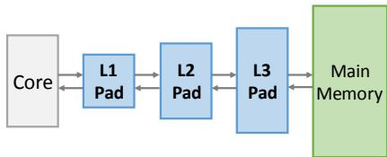
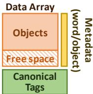
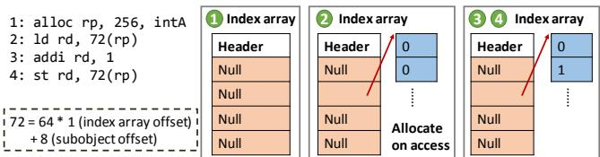
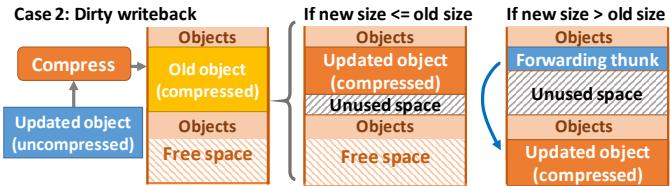
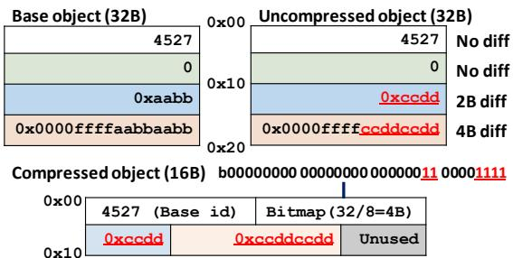
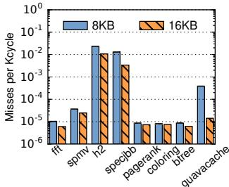
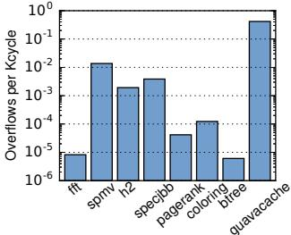
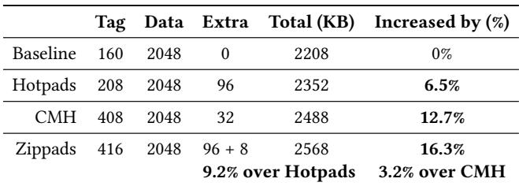

Compress Objects, Not Cache Lines: An Object-Based Compressed Memory Hierarchy 论文解析¶
0. 论文基本信息¶
作者 (Authors): Po-An Tsai, Daniel Sanchez
发表期刊/会议 (Journal/Conference): ASPLOS
发表年份 (Publication Year): 2019
研究机构 (Affiliations): MIT CSAIL
1. 摘要¶
目的
- 现有的内存压缩技术以cache lines（缓存行）为单位进行压缩，这在处理以arrays（数组）为主的科学计算程序时效果良好，但在处理以objects（对象）为主的现代应用程序时效率低下。
- 本文旨在解决这一问题，其核心目标是设计一种针对object-based applications（基于对象的应用程序）的新型压缩内存层次结构，以显著提升这类应用的compression ratio（压缩比）和performance（性能）。
方法
- 提出 Zippads，这是首个object-based compressed memory hierarchy（基于对象的压缩内存层次结构）。它构建于 Hotpads（一个现有的基于对象的内存层次结构）之上，将objects而非cache lines作为压缩的基本单元。
- 提出 COCO (Cross-Object COmpression)，一种新颖的cross-object-compression algorithm（跨对象压缩算法），通过利用同一类型对象之间的冗余性来实现高压缩比。
- Zippads 的关键机制包括：
- 直接重写指针：当对象在层次结构中移动并被压缩时，硬件直接重写所有指向该对象的指针，使其直接指向压缩后的对象，从而避免了传统压缩内存中所需的额外地址翻译层。
- 集成 COCO：Zippads 使用 COCO 压缩对象，并使用传统的 BDI+FPC 算法压缩数组，通过指针中的元数据位来区分不同的压缩格式。
- 处理大对象：对于大于128B的对象，Zippads 将其分割成64B的subobjects（子对象）进行独立压缩，以避免不必要的高延迟解压。
 Figure 8. Example Zippads hierarchy with a compressed last-level pad and main memory.
Figure 8. Example Zippads hierarchy with a compressed last-level pad and main memory.
结果
- 在包含数组和对象混合的工作负载上，与当前最先进的**compressed memory hierarchy **(CMH) 相比：
- Zippads+COCO 实现了平均 1.63× 的更高压缩比，最高可达 2×。
- Zippads+COCO 将主内存流量减少了 56%，并将系统性能平均提升了 17%。
- 即使不使用 COCO（仅使用 Zippads-BF），其压缩比也比 CMH 高出 1.37×，证明了基于对象的布局本身的优势。
- 关键性能指标对比如下表所示：
| 方案 | 平均压缩比 | 相对于 CMH 的压缩比提升 | 主内存流量 (相对于未压缩基线) | 性能 (相对于未压缩基线) |
|---|---|---|---|---|
| CMH | 1.24× | 1.00× | -15% | +5% |
| Hotpads | N/A | N/A | -66% | +24% |
| Zippads-BF | 1.70× | 1.37× | -78% | +25% |
| Zippads+COCO | 2.01× | 1.63× | -80% | +30% |
- 硬件开销分析表明，Zippads 仅引入了 3.2% 的额外片上存储开销，主要包括一个 8KB base object cache 和加倍的canonical tag array。
 Figure 15. Compression ratio of different schemes.
Figure 15. Compression ratio of different schemes. Figure 17. Performance of different schemes.
Figure 17. Performance of different schemes.
结论
- 传统的以cache lines为单位的压缩方法不适合object-based programs，因为对象的不规则布局和有限的内部冗余限制了其效果。
- Zippads 通过将压缩单元从cache lines转变为objects，并利用Hotpads的指针重写机制，成功消除了地址翻译开销，实现了更紧凑的内存布局。
- COCO 算法通过挖掘跨对象的冗余性，进一步大幅提升了压缩比。
- Zippads+COCO 的结合被证明是一种高效且实用的方案，它不仅能显著提升object-dominated workloads的性能和效率，同时对array-based workloads也保持了良好的兼容性和性能。
2. 背景知识与核心贡献¶
研究背景与动机
- 现有的硬件内存压缩技术（如 BDI, FPC, LCP）主要针对固定大小的缓存行（cache lines）进行压缩。
- 这些技术通过利用单个缓存行内部的数据冗余（如相似的数值或重复模式）来工作，对数组主导（array-dominated）的科学计算程序效果显著。
- 然而，对于对象主导（object-based）的应用程序（如数据库、图分析、Java应用），这些技术效果不佳，原因如下：
- 不规则的内存布局：对象包含不同类型和可压缩性的字段，且不同类型的对象在内存中交错存放。
- 与缓存行边界不匹配：对象的大小和起始地址通常不与固定的缓存行对齐，导致一个对象可能跨越多个缓存行，而一个缓存行也可能包含多个不相关的对象片段。
- 有限的内部冗余：单个对象内部的字节间相似性很低，使得基于缓存行的压缩算法难以找到有效的压缩模式。
- 此外，传统压缩方案需要在压缩地址空间和未压缩地址空间之间进行转换，这引入了额外的元数据开销（如翻译表）或内部碎片，进一步限制了压缩效率。
 Figure 1. Fraction of the heap consumed by objects and arrays for several Java benchmarks.
Figure 1. Fraction of the heap consumed by objects and arrays for several Java benchmarks.
核心贡献
- 提出了 Zippads，这是首个专为对象导向应用设计的基于对象的压缩内存层次结构（object-based compressed memory hierarchy）。
- 以对象为压缩单元：Zippads 直接压缩和传输可变大小的对象，而非固定大小的缓存行。
- 消除地址转换开销：通过利用其底层架构 Hotpads 的特性，在对象跨层级移动时直接重写指针，使指针直接指向压缩后的对象，从而完全避免了传统方案中压缩/未压缩地址空间之间的间接寻址层。
- 紧凑存储：压缩后的对象被连续存放，不留空隙，最大化利用了压缩带来的空间节省。
- 提出了 COCO (Cross-Object COmpression)，一种新颖的跨对象压缩算法。
- 利用跨对象冗余：COCO 观察到同类型对象之间存在大量相似性（value locality），并利用这一点进行压缩。
- 差分编码：对于一个对象，COCO 只存储其与一个基对象（base object）不同的字节。其压缩格式包含：基对象ID、一个标记差异位置的位图（diff bitmap）和实际的差异字节串（byte diffs）。
- 高效实现：COCO 的压缩/解压电路简单，RTL原型显示其面积开销远小于现有方案（如BPC），且频率远高于典型的uncore频率。
- 协同工作：Zippads 能够根据数据类型智能选择压缩算法：对对象使用 COCO，对数组则使用传统的 BDI+FPC 混合算法，从而在混合工作负载上均能取得优异表现。

3. 核心技术和实现细节¶
0. 技术架构概览¶
整体技术架构
本文提出了一种名为 Zippads 的新型压缩内存层次结构，其核心思想是将 对象 (objects) 而非传统的 缓存行 (cache lines) 作为压缩的基本单元。该架构建立在名为 Hotpads 的现有对象基内存层次结构之上，并引入了一种名为 COCO (Cross-Object COmpression) 的新压缩算法来利用同类对象间的冗余。
-
基础平台: Hotpads
- Hotpads 是一个硬件管理的、基于 pads（类似暂存器的内存）的层次化内存系统，它以可变大小的对象为单位进行数据传输和管理。
- 它通过 指针重写 (pointer rewriting) 机制，在对象于不同层级 pads 间移动时，直接更新所有指向该对象的指针。
- 其 Collection-Eviction (CE) 过程在回收垃圾的同时，将不常访问的存活对象逐级向上驱逐，并在此过程中紧凑地重新排列对象并更新指针。
-  Figure 5. Hotpads is a hierarchical memory system with multiple levels of pads.
-  Figure 6. Pad organization.
-
Zippads 的核心创新
- 对象级压缩: Zippads 利用 Hotpads 的对象流特性，在对象被驱逐到较冷的层级（如最后一级 pad 或主存）时对其进行压缩。
- 无间接寻址: 通过 Hotpads 的指针重写机制，Zippads 将指针直接指向压缩后的对象，从而完全避免了传统压缩内存中所需的 uncompressed-to-compressed 地址翻译表，消除了由此带来的元数据开销和内部碎片。
- 压缩信息编码: Zippads 将压缩相关的元数据（如压缩后大小、使用的算法标识）直接编码在 指针格式 中，使得每次访问都能立即获知如何解压数据。
 Figure 11. Zippads pointer format. Compression information is encoded in the pointer.
Figure 11. Zippads pointer format. Compression information is encoded in the pointer.
- 处理大对象: 对于大于 128B 的大对象，Zippads 将其分割为多个 subobjects（子对象），并通过一个微架构级的 index array（索引数组）进行管理，实现了按需分配和压缩，避免了不必要的数据移动和高延迟。
-  Figure 12. Zippads breaks large objects into subobjects.
- 脏写回处理: 当一个已被压缩的对象被修改后写回，若其新压缩尺寸变大（overflow），Zippads 会为其分配新位置，并在原位置放置一个 forwarding thunk（转发桩）以维持指针有效性。这些低效情况会在后续的 CE 周期性 compaction（压缩整理）中被清理。
-  Figure 10. Compressing objects on dirty writebacks.
-
COCO 压缩算法集成
- 跨对象压缩: COCO 是一种差分压缩算法，它为每个对象类型维护一个 base object（基准对象）。压缩时，仅存储与基准对象不同的字节（diff bitmap 和 byte diffs）。
-  Figure 13. Example COCO-compressed object.
- 高效实现: COCO 的硬件电路（压缩/解压）非常简单，面积开销远小于现有方案。
- 基准对象缓存: 为了加速对基准对象的访问，Zippads 配备了一个小容量（8KB）但高效的 base object cache，利用对象类型访问的高度倾斜性，实现了极低的缓存未命中率。
 Figure 14. CDF of accesses to most popular object ids.
Figure 14. CDF of accesses to most popular object ids.
- 混合压缩策略: Zippads 能够区分 objects 和 arrays（通过扩展 ISA 的
alloc和alloc_array指令），并对它们采用不同的压缩算法：对对象使用 COCO，对数组使用传统的 BDI+FPC 混合算法。 Table 3. Zippads+COCO in-pointer compression information. X denotes the bit does not matter, and Cs denote the bits used by hybrid BDI+FPC encoding.
Table 3. Zippads+COCO in-pointer compression information. X denotes the bit does not matter, and Cs denote the bits used by hybrid BDI+FPC encoding.
- 跨对象压缩: COCO 是一种差分压缩算法，它为每个对象类型维护一个 base object（基准对象）。压缩时，仅存储与基准对象不同的字节（diff bitmap 和 byte diffs）。
最终架构效果
通过将对象作为压缩单元并利用跨对象冗余，Zippads+COCO 架构在包含数组和对象的混合工作负载上，相比现有的压缩内存层次 (CMH) 方案，实现了 1.63倍 的平均压缩比提升，并带来了 17% 的平均性能提升和 56% 的主存流量减少。
1. Zippads¶
核心实现原理
- Zippads 并非一个孤立的设计，而是构建在名为 Hotpads 的对象级内存层次结构之上。它继承了 Hotpads 的核心思想：将内存系统视为一个由多级 pad（类似于硬件管理的 scratchpad）组成的层次结构，并以可变大小的对象为基本单位进行数据传输和管理。
- 其核心创新在于，当对象从高速、小容量的 pad（如 L1/L2）被驱逐（evicted）到低速、大容量的压缩层级（如最后一级 pad 或主存）时，Zippads 会透明地压缩该对象。
- 关键机制：指针重写 (Pointer Rewriting)。与传统压缩内存需要一个额外的地址翻译表（如 TLB-like structure）不同，Zippads 利用 Hotpads 在 Collection-Eviction (CE) 过程中必须更新所有指向被移动对象的指针这一特性。当一个对象被压缩并存入新的物理位置后，Zippads 会直接将所有指向它的指针重写为指向其新的、压缩后的地址。这使得后续访问可以直接定位到压缩数据，完全避免了额外的地址转换开销和内部碎片。
Figure 8. Example Zippads hierarchy with a compressed last-level pad and main memory.
算法流程与关键处理场景
-
新对象迁移 (Newly Moved Objects):
- 当一个冷对象首次从非压缩层级（如 L2 pad）被驱逐到压缩层级（如 L3 pad）时，Zippads 使用选定的压缩算法（如 BDI 或 COCO）对其进行压缩。
- 压缩后的对象通过 bump-pointer allocation 紧凑地存放在压缩层级的空闲空间末尾。
- 该对象的新规范地址 (canonical address) 即为其在压缩层级中的地址，所有指向它的指针在 CE 过程中被更新为此新地址。
-
脏数据回写 (Dirty Writebacks):
- 如果一个已在压缩层级的对象被加载到上层 pad 并被修改（变“脏”），在回写时其压缩后的大小可能发生变化。
- 尺寸不变或变小：对象被写回原位置，若变小则留下少量未使用空间。
- 尺寸变大 (Overflow)：对象无法放回原位置。Zippads 会在空闲区分配一个新位置存放压缩对象，并在原位置创建一个 forwarding thunk（转发桩），其中存储指向新位置的指针。后续访问旧地址会通过此桩跳转到新地址。
- 周期性压缩 (Periodic Compaction)：在压缩层级的 CE 过程中，系统会执行压缩操作，将所有存活对象重新紧凑排列。此过程会回收因尺寸变小而产生的碎片，并移除 forwarding thunks，将对象移至连续空间，从而消除溢出带来的长期存储效率损失。
Figure 10. Compressing objects on dirty writebacks.
- 大对象处理 (Large Objects):
- 对于超过阈值（如 128B）的大对象，Zippads 会将其分解为多个 64B 的子对象 (subobjects)。
- 分配时，首先创建一个索引数组 (index array)，其元素是指向各个子对象的指针。
- 子对象采用 allocate-on-access 策略，即只有在被访问时才分配和压缩对应的子对象。这避免了为访问单个字段而解压整个大对象的高延迟。
Figure 12. Zippads breaks large objects into subobjects.
参数设置与元数据编码
- 压缩信息嵌入指针: Zippads 将压缩所需的元数据直接编码在指针格式中，而非依赖缓存标签。这是其实现高效访问的关键。
- 指针的 size 字段被重定义为存储对象的压缩后大小。
- 额外的几位用于存储算法特定的压缩信息（例如，对于 BDI+FPC 混合方案需要 4 位，对于 COCO 也需要特定标识）。
- 这种设计使得每次通过指针发起的内存访问，硬件都能立即知道需要获取多少字节的数据以及使用哪种算法进行解压。
Figure 11. Zippads pointer format. Compression information is encoded in the pointer.
- 压缩算法选择:
- Zippads 本身是压缩算法无关的，但论文中主要集成了两种：
- COCO (Cross-Object COmpression): 专为对象 (objects) 设计，利用同类型对象间的冗余进行差分压缩。
- BDI+FPC (Hybrid): 专为数组 (arrays) 设计，利用数组内部数据的局部性进行压缩。
- 为了区分对象和数组，ISA 被扩展，增加了
alloc_array指令。alloc用于分配对象，alloc_array用于分配数组，它们生成的指针中包含相应的类型位。
- Zippads 本身是压缩算法无关的，但论文中主要集成了两种：
输入输出关系及在整体中的作用
- 输入: 来自上层 pad（如 L2）的、需要被驱逐到压缩层级的对象数据及其元数据（如类型、大小）。
- 处理:
- 根据对象类型（通过指针中的元数据判断）选择合适的压缩算法（COCO 或 BDI+FPC）。
- 执行压缩，并将压缩后的数据块紧凑地存入压缩层级（L3 pad 或主存）。
- 更新对象的规范地址，并在 CE 过程中重写所有相关指针。
- 输出:
- 一个在物理上更紧凑的内存布局，显著提高了有效内存容量。
- 一组直接指向压缩数据的、已更新的指针，确保了后续访问的低延迟。
- 减少了跨层级（尤其是到主存）的数据传输量，从而降低了带宽需求。
在整体架构中的作用
- 作为基础载体: Zippads 提供了一个对象感知的、支持透明压缩的内存层次结构。它解决了传统基于缓存行的压缩方案在处理不规则对象布局时的根本性缺陷。
- 赋能 COCO: Zippads 的对象级管理和指针控制能力，为 COCO 这种跨对象压缩算法提供了必要的硬件支持。没有 Zippads 提供的对象边界和指针操作能力，COCO 很难在通用硬件中高效实现。
- 性能与效率的平衡者: 通过将压缩操作与 Hotpads 固有的 CE 过程相结合，Zippads 将压缩/解压的开销分摊到了内存管理操作中，避免了在关键访问路径上引入显著延迟，从而实现了高压缩比与高性能的统一。评估显示，Zippads+COCO 相比于最先进的传统压缩方案，平均压缩比提升 1.63×，性能提升 17%。
2. COCO (Cross-Object COmpression)¶
COCO压缩算法的核心原理
- COCO (Cross-Object COmpression) 是一种差分压缩 (differential compression) 算法，其核心思想是利用同类型对象间存在的大量冗余。
- 该算法为每种object type维护一个base object (基础对象)。
- 对于任何一个需要被压缩的同类型对象，COCO不存储其完整内容，而是仅存储它与base object之间的字节级差异 (byte diffs)。
COCO压缩格式与数据结构
- 每个经过COCO压缩的对象由以下三个部分组成：
- Base Object ID: 一个32位的整数，用于唯一标识该对象所参照的base object。
- Diff Bitmap (差异位图): 一个位图，其中每一位对应原对象的一个字节。如果第
i位被置为1，则表示该对象的第i个字节与base object不同。 - Byte Diffs (字节差异串): 一个连续的字节序列，包含了所有在Diff Bitmap中标记为不同的实际字节值。
- Figure 13. Example COCO-compressed object. 展示了一个具体的COCO压缩示例，清晰地说明了如何从一个完整的对象生成其压缩后的三元组表示。
Base Object的构建与管理
- 选择策略: 系统为每个object type id静态分配一个base object。实现中采用了一种简单高效的策略：将evicted到压缩层级的第一个该类型对象直接用作base object。
- 存储位置: Base objects被存储在主内存的一个专用区域。
- 缓存机制: 为了加速压缩和解压缩过程，Zippads引入了一个8 KB的base object cache。该缓存利用了object type访问高度倾斜的特性（少数类型占据大部分访问），使得缓存命中率极高。
- Figure 14. CDF of accesses to most popular object ids. 的CDF图证实了这一点，显示绝大多数访问都集中在极少数的object type上。
- 评估显示，base object cache的失效率极低（通常低于0.01 MPKC），对性能影响微乎其微。
硬件实现与开销
- 电路设计: COCO的压缩/解压缩电路设计简单，主要由窄位宽的comparators和multiplexers构成。
- RTL实现: 作者使用RTL实现了该电路，并在45nm工艺下进行了综合。
- 压缩电路: 面积等效于810 NAND2 gates，运行频率可达2.8 GHz。
- 解压缩电路: 面积等效于592 NAND2 gates，运行频率可达3.4 GHz。
- 面积优势: 与先前的压缩技术（如BPC的68K NAND2 gates）相比，COCO的硬件开销非常小，证明了其在硬件中实现的可行性。
在Zippads系统中的集成与作用
- 算法协同: Zippads并非对所有数据都使用COCO。它采用了一种混合策略：
- 对objects使用COCO压缩。
- 对arrays则使用传统的BDI+FPC混合压缩算法。
- 指针元数据: 为了支持这种混合策略，Zippads扩展了指针格式，在其中嵌入了4 bits的压缩元数据，用于标识数据的类型（object/array）以及所使用的具体压缩算法。
- Table 3. Zippads+COCO in-pointer compression information. X denotes the bit does not matter, and Cs denote the bits used by hybrid BDI+FPC encoding. 详细列出了这4 bits的编码方案。
- ISA扩展: 为了在分配时区分对象和数组，ISA新增了alloc_array指令，而原有的alloc指令用于分配对象。这使得硬件能在数据生命周期的最初就获知其类型。
- 整体作用: COCO是Zippads实现高压缩比的关键。评估显示，相比于仅使用BDI+FPC的Zippads-BF变体，引入COCO后，系统平均压缩比从1.70提升至2.01，性能平均提升了5%。这充分证明了跨对象压缩对于object-dominated workloads的有效性。
3. Hotpads 集成¶
Hotpads 集成原理
Zippads 并非从零开始设计，而是将压缩功能无缝集成到 Hotpads 这一现有的 object-based memory hierarchy 之上。这种集成策略是 Zippads 成功的关键，因为它直接利用了 Hotpads 为管理对象而设计的核心机制。
- 核心依赖：Zippads 的所有压缩操作都围绕 objects 而非 cache lines 展开，这与 Hotpads 的基本抽象完全一致。
- 硬件支持：Hotpads 提供了硬件层面的对象生命周期管理、指针控制和内存布局优化，Zippads 在此基础上增加了压缩/解压缩逻辑。
利用 Hotpads 的对象流 (Object Flow)
Hotpads 定义了一个独特的对象在内存层次结构中的流动方式，Zippads 巧妙地利用此流程来决定何时以及如何压缩对象。
- 初始状态：所有新分配的对象首先存在于 core-private L1/L2 pads 中，并且是 uncompressed 状态。
- 冷数据迁移：当对象在 L1/L2 中变得不活跃（cold）时，Hotpads 的 collection-eviction (CE) 过程会将其驱逐（evict）到更大的下一级存储（如 last-level pad 或 main memory）。
- 压缩触发点：Zippads 将对象首次被驱逐到 compressed level（例如 last-level pad）的时刻，作为其 compression trigger。此时，对象被压缩并存入目标层级。
- 优势：这种“先 uncompressed，后 compressed”的策略避免了传统压缩内存中必须维护 uncompressed-to-compressed address translation 的复杂性和开销。
指针重写 (Pointer Rewriting) 机制
Hotpads 的一个关键特性是它能完全控制和修改程序中的指针。Zippads 利用此特性来直接指向压缩后的对象，从而消除了地址翻译层。
- 透明性：对软件而言，指针是不透明的（opaque）。硬件可以在后台自由修改其内容。
- 过程：
- 当一个对象
A被复制到 L1 pad 时，指向A的寄存器或指针会被 rewritten 以指向 L1 中的新副本。 - 同样，当
A被驱逐到压缩的 last-level pad 时，所有指向A的指针都会被更新，直接指向其 compressed canonical address。
- 当一个对象
- 结果：后续对该对象的任何访问都直接命中其压缩形式，无需额外的元数据查找或地址计算。
 Figure 4. Example showing Hotpads’s main features.
Figure 4. Example showing Hotpads’s main features.
集合-驱逐 (Collection-Eviction, CE) 过程的复用
CE 是 Hotpads 中用于回收空间和管理对象迁移的核心硬件过程。Zippads 将其作为执行压缩相关操作的理想时机。
- 批量处理：CE 过程会扫描整个 pad 的数据区域，识别 live 和 dead 对象。这是一个天然的、高效的批量处理窗口。
- 指针更新：在 CE 期间，所有需要被驱逐的 live 对象都会被移动到下一级。Zippads piggybacks 在这个过程中，一次性更新所有指向这些被驱逐对象的指针，使其指向新的（压缩的）位置。
- 处理脏写回 (Dirty Writebacks)：如果一个已被压缩的对象被加载到 L1 修改后再写回，其压缩大小可能改变。
- 若新大小 ≤ 旧大小，则原地更新。
- 若新大小 > 旧大小（overflow），则在新位置分配空间，并在旧位置创建一个 forwarding thunk 指向新位置。
- 周期性压缩 (Periodic Compaction)：后续的 CE 过程会执行 compaction，将所有 live 对象紧凑地排列在一起。在此过程中，Zippads 会清理因 overflow 产生的 forwarding thunks 和因缩小而产生的 internal fragmentation，恢复存储效率。
指针格式扩展
为了支持压缩，Zippads 扩展了 Hotpads 的指针格式，将压缩所需的元数据直接嵌入指针本身。
- 原始格式：Hotpads 指针包含对象地址（48位）和对象大小（14位）。
- Zippads 扩展：Zippads 将 size field 重新解释为 compressed size，并利用部分高位来存储 algorithm-specific compression information（例如，使用哪种压缩算法）。
- 优势：由于所有内存访问都始于一个指针，硬件在访问对象前就能立即知道其压缩格式和大小，无需查询额外的 tag 或 metadata cache。
Figure 11. Zippads pointer format. Compression information is encoded in the pointer.
在整体架构中的作用
Hotpads 的集成为 Zippads 提供了不可或缺的基础能力，使其能够高效、透明地实现基于对象的压缩。
- 提供正确的抽象：Hotpads 的 object-granularity 抽象是 Zippads 能够以对象为单位进行压缩的前提。
- 解决地址翻译难题：通过 pointer rewriting 和 canonical addressing，彻底规避了传统压缩方案中复杂的地址映射问题。
- 提供高效的执行上下文：CE process 为压缩、指针更新和存储整理等开销较大的操作提供了理想的、批量化的执行时机，极大地摊薄了成本。
- 简化硬件设计：将压缩元数据嵌入指针，减少了对额外高速缓存（如 metadata cache）的依赖，降低了硬件复杂度和访问延迟。
总而言之，没有 Hotpads 提供的底层对象管理和指针控制能力，Zippads 的设计理念——“Compress Objects, Not Cache Lines”——将难以在硬件中高效实现。两者紧密结合，共同构成了一个针对现代 object-heavy applications 优化的新型内存层次结构。
4. 指针内嵌压缩元数据¶
实现原理与动机
- 传统压缩缓存架构（如 VSC、LCP）通常将压缩元数据（例如压缩后的大小、使用的算法类型）存储在 cache tag 中。这种方式高效，因为标签查找是访问流程的第一步。
- Zippads 的设计基于 Hotpads 对象内存层次结构，其核心数据单元是 variable-sized objects 而非固定大小的 cache lines。更重要的是，Zippads 的压缩可以应用于 main memory，而主存本身没有类似 cache tag 的结构。
- 为了解决这个根本性问题，Zippads 利用了 Hotpads 的一个关键特性：pointers are opaque to software（指针对软件不透明）。这意味着硬件可以完全控制指针的内部格式，而无需改变 ISA 或影响上层软件。
- 因此，Zippads 选择将压缩元数据 直接编码在指针内部。这样，任何内存访问都始于一个指针，硬件在解引用该指针时就能立即获取所有必要的解压信息，从而避免了额外的元数据查找开销。
Figure 7. Hotpads pointer format.
Figure 11. Zippads pointer format. Compression information is encoded in the pointer.
指针格式的演进与细节
- Hotpads 基础指针格式（图7）：
- 低48位：存储对象的 word-aligned address（字对齐地址），指向对象的第一个字。
- 高14位：存储对象的 size in words（以字为单位的大小）。
- 剩余2位：用于其他元数据。
- Zippads 扩展指针格式（图11）：
- 压缩后大小：原有的 size field 被重新解释为对象的 compressed size（压缩后大小），这对于使用 bump-pointer allocation 紧凑地存储压缩对象至关重要。
- 算法标识：从地址或大小字段中划出 a few extra bits（几个额外比特）来存储 algorithm-specific compression information（特定于算法的压缩信息）。例如，当使用 BDI 算法时，需要 4 个比特来标识具体的 BDI 编码格式。
- 地址空间权衡：这种设计略微减少了可用的地址宽度。但通过使用 word addressing（字寻址，8字节粒度）而非 byte addressing（字节寻址），Zippads 在牺牲少量地址空间的情况下，换取了高效的元数据内嵌能力。例如，44 位的字地址几乎等同于 x86-64 的 48 位字节地址空间。
在 Zippads+COCO 集成中的具体应用
- Zippads 并非只支持一种压缩算法，而是能根据数据类型（对象或数组）动态选择最优算法。
- 集成方案（表3）：
- 指针中预留 4 bits of compression metadata。
- Bit 0: 标识是否为使用 BDI+FPC 压缩的 array。
- Bit 1: 如果 Bit 0 为 0，则此位标识是否为使用 COCO 压缩的 object。
- Bit 2: 如果前两位均为 0，则此位用于区分未压缩的 object 或 array，以便在 Collection-Eviction (CE) 过程中正确应用压缩。
- Bits [2:0] or [3:1]: 剩余的比特用于 BDI+FPC 算法的具体格式编码。
| Bit(s) | 含义 |
|---|---|
| 0 | 1 = Array (BDI+FPC compressed), X = otherwise |
| 1 | 1 = Object (COCO compressed), X = otherwise |
| 2 | 1 = Object, 0 = Array (for uncompressed data) |
| C[2:0] | BDI+FPC specific encoding format |
- ISA 扩展（表4）：
- 为了在分配时就区分开对象和数组，Zippads 扩展了 ISA，引入了新的 alloc_array 指令。
- alloc 指令用于分配对象，并在指针中设置相应的类型位。
- alloc_array 指令用于分配数组，并在指针中设置数组类型位。
- 这使得硬件在对象生命周期的最初阶段就能为其选择正确的压缩策略。
输入输出关系及在整体系统中的作用
- 输入：一个由软件持有的、指向内存中某个对象或数组的 opaque pointer。
- 处理：当硬件需要访问该指针指向的数据时（例如，在 L1/L2 pad miss 后需要从压缩的 L3 pad 或 main memory 中获取数据），它会解析该指针的内部格式。
- 输出/作用：
- 即时解压决策：硬件能立即得知目标数据块是 compressed 还是 uncompressed。
- 精准数据获取：如果已压缩，硬件能精确知道需要从内存中读取多少字节（compressed size）。
- 正确解压执行：硬件能立刻确定应调用哪个解压模块（BDI+FPC for arrays, COCO for objects）。
- 消除间接层：这是 Zippads 相对于传统压缩主存（如 LCP、RMC）的关键优势。传统方案需要一个独立的 translation table（如 TLB-like structure）来将逻辑地址映射到可变大小的压缩块物理地址，这会引入延迟和元数据开销。Zippads 通过 pointer rewriting（在 CE 过程中更新所有指向被移动/压缩对象的指针）和 in-pointer metadata，完全消除了这一间接层，实现了 direct access to compressed objects。
5. 大对象分块处理¶
大对象分块处理的实现原理与流程
- Zippads 将 大于128B 的对象定义为“大对象”，其处理策略的核心是 按需分配 (allocate-on-access) 和 独立压缩，以解决传统方案中因访问单个元素而必须解压整个大对象所带来的 高延迟 问题。
- 具体实现流程如下：
- 当程序通过
alloc指令请求一个大对象时，Zippads 不会立即分配完整的物理空间。 - 相反，它会先在内存中创建一个 索引数组 (index array)。该数组的大小由对象总尺寸决定，每个元素是一个指针，用于指向一个 64B 的子对象 (subobject)。
- 所有索引数组中的指针初始值均为 null，表示对应的子对象尚未被分配物理内存。
- 当程序首次访问大对象中某个特定偏移量的数据时，硬件会：
- 根据偏移量计算出所属的子对象索引。
- 检查索引数组中对应位置的指针是否为 null。
- 如果为 null，则触发 按需分配：为该 64B 子对象分配物理空间，并将新地址写回索引数组。
- 然后，硬件通过索引数组中的指针，完成对目标子对象的实际数据访问。
- 当程序通过
- 这一过程对软件完全透明，是一种 微架构优化 (microarchitecture optimization)。
Figure 12. Zippads breaks large objects into subobjects.
参数设置与设计权衡
- 分块大小: 固定为 64B。这个尺寸与传统的 cache line 大小一致，便于利用现有的内存子系统进行高效传输，同时也能有效限制单次解压操作的数据量。
- 大对象阈值: 设定为 128B。这是一个经验值，旨在区分普通小对象（可整体压缩）和需要特殊处理的大对象。
- 主要优势:
- 低延迟: 访问大对象内部任意部分时，只需解压对应的 64B 子对象，而非整个可能达到 KB 甚至 MB 级别的大对象。
- 紧凑布局: 避免了为未使用的对象部分预留内存，提高了内存空间利用率。
- 避免大对象溢出: 在发生 dirty writeback 导致压缩后尺寸变大的情况下，只需移动单个 64B 子对象，而不是庞大的整体对象，大大降低了处理开销。
- 引入的开销:
- 额外元数据: 需要为每个大对象维护一个索引数组，这会增加约 1% 的内存足迹。
- 间接访问: 每次访问都需要一次额外的指针解引用（从索引数组到子对象），增加了少量访问路径的复杂性。
在 Zippads 整体架构中的作用
- 无缝集成: 子对象本身也被视为普通的 Hotpads 对象。这意味着它们可以像其他小对象一样，参与 Collection-Eviction (CE) 过程、被 压缩、其指针也会被 重写。
- 统一压缩策略: 每个 64B 子对象会被独立地应用 Zippads 的压缩算法（如 COCO 或 BDI+FPC）。这使得大对象的不同部分可以根据其内容特性采用最合适的压缩方式。
- 关键作用: 该机制是 Zippads 能够高效、通用地处理 所有类型 内存分配（包括大型数组和复杂对象图）的关键，确保了其在面对混合工作负载时依然能保持高性能和高压缩比，从而 抵消了索引数组带来的微小开销。
4. 实验方法与实验结果¶
实验设置
-
基线系统与对比方案：实验在 MaxSim 平台上进行，对比了五种内存层次结构：
- Uncompressed：传统的三级缓存，无压缩。
- Compressed memory hierarchy (CMH)：代表当前最先进水平，对 LLC 和主存均采用 HyComp-style hybrid BDI+FPC 压缩。LLC 采用 VSC 设计，主存采用 LCP 设计，并假设元数据缓存是理想的（always hits）。
- Hotpads：作为 Zippads 的基础，是一个未压缩的、基于对象的内存层次结构。
- Zippads-BF：Zippads 的一个变体，对所有数据（对象和数组）都使用 BDI+FPC 压缩，用于评估仅靠对象级布局带来的收益。
- Zippads (+COCO)：完整的提案，对对象使用 COCO 压缩，对数组使用 BDI+FPC 压缩。
-
硬件配置：详细的模拟器参数见下表。
组件 参数 Cores 1 L1/L2 32/256 KB, 8-way, 4-cycle hit latency LLC / Last-level Pad 8 MB, 16-way Main Memory 8 GB DDR3-1600 Base Object Cache 8 KB -
软件与工作负载：
- 主要使用 Java 工作负载，涵盖科学计算（
fft,spmv）、数据库（h2,SPECjbb2005）、图处理（PageRank,Coloring）和键值存储（GuavaCache,BTree）。 - 为证明通用性，额外测试了两个 C/C++ 工作负载：
GCBench（二叉树操作）和Silo（内存数据库）。 - 所有工作负载的堆大小均设为其最小稳定运行堆大小的 2倍，以确保能充分访问主存。
- 主要使用 Java 工作负载，涵盖科学计算（
-
评估指标：主要关注 平均压缩比、主存流量（字节）和性能（执行时间的倒数），所有指标均相对于 Uncompressed 基线进行归一化。
结果数据分析
-
压缩比：
Figure 15. Compression ratio of different schemes.- 在数组主导的工作负载（
fft,spmv）上，CMH 表现良好（压缩比 ~1.6），而 Zippads 略优（~1.8），因为其能更好地压缩非堆数据。 - 在对象主导的工作负载上，CMH 几乎无效（压缩比仅 1.06-1.27），而 Zippads 取得了巨大成功。
- Zippads-BF（仅用 BDI+FPC）的压缩比已达 1.56-1.78，显著优于 CMH，这证明了以对象为单位进行压缩和紧凑布局的有效性。
- 完整的 Zippads (+COCO) 将压缩比进一步提升至 1.82-2.24，证明了 COCO 跨对象压缩算法的巨大威力。
- 平均压缩比：CMH 为 1.24，Zippads-BF 为 1.70（1.37× 于 CMH），Zippads 为 2.01（1.63× 于 CMH）。
- 在数组主导的工作负载（
-
主存流量：
 Figure 16. Normalized main memory traffic of different schemes.
Figure 16. Normalized main memory traffic of different schemes.- CMH 平均减少 15% 流量，主要得益于 LLC 容量增大和主存突发传输。
- Hotpads 通过对象级移动和片上垃圾回收，平均减少 66% 流量。
- Zippads 在 Hotpads 的基础上，利用高压缩比进一步将平均主存流量减少了 56%（相比 CMH+S）。
-
系统性能：
Figure 17. Performance of different schemes.- 性能提升与主存流量减少高度相关。
- CMH+S（CMH + cache scrubbing）平均提升 11% 性能。
- Hotpads 平均提升 24% 性能。
- Zippads 平均提升 30% 性能，相比 CMH+S 有 17% 的优势，证明其压缩开销很小，收益远大于成本。
消融实验与深入分析
-
Zippads-BF vs. Zippads：这是核心的消融实验，用于分离 对象级布局 和 COCO 算法 的贡献。
- Zippads-BF 相比 CMH 的巨大优势（1.37× 压缩比）清晰地表明，将压缩单元从 cache line 改为 object 是解决对象程序压缩难题的关键第一步。
- Zippads 相比 Zippads-BF 的进一步提升（1.63× vs 1.37×）则完全归功于 COCO 算法，证明了利用同类型对象间的冗余是实现更高压缩比的有效途径。
-
COCO 开销分析：
- Base Object Cache Misses： Figure 19. Rate of base object cache misses (in misses per Kcycle, log scale). 大部分工作负载的未命中率极低（< 0.001 MPKC），对性能影响微乎其微（< 0.1%），证明一个小的（8KB）缓存足以满足需求。
- Overflow Frequency： Figure 20. Rate of dirty writeback overflows (in overflows per Kcycle, log scale). 由于对象修改后尺寸变大的“溢出”情况非常罕见（最高仅 0.4/Kcycle），说明 Zippads 处理脏写回的机制高效且开销可控。
-
硬件开销：
- Zippads 相比基线增加了 16.3% 的片上存储（主要用于双倍 c-tag 和 8KB base object cache）。
- 这个开销与 CMH（+12.7%）相当，并且被其带来的 2× 主存流量削减和 30% 性能提升所完全抵消。